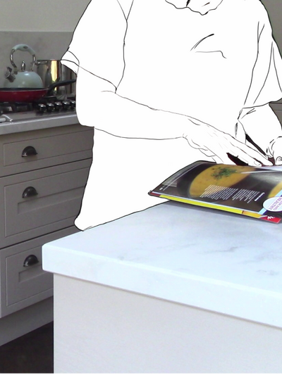
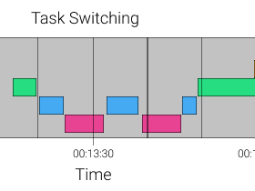
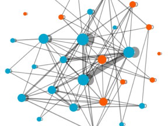
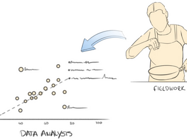
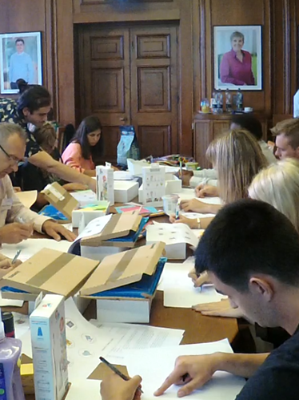
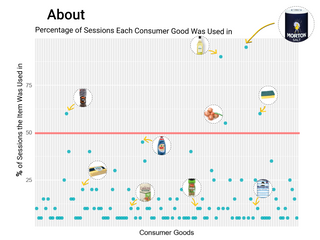
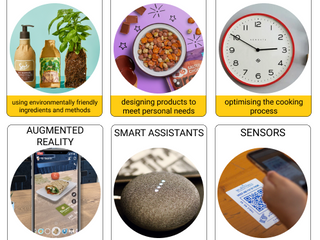
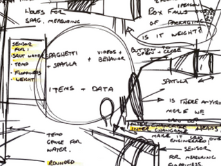
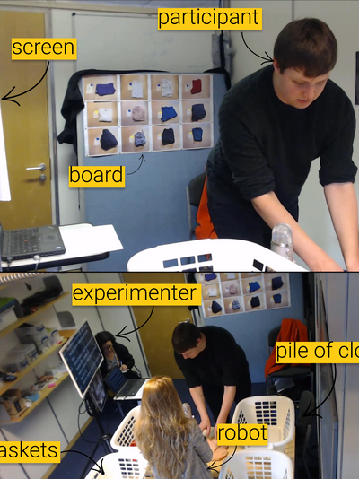
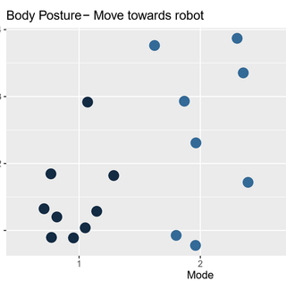

My Research
Quantitative Ethnography


I am interested in combining quantitative methods including descriptive and inferential statistics with qualitative methods to obtain a deeper understanding of our everyday activities and interactions with technologies.
 Data-inspired Design


I am a firm believer that the vast amount of digital data that is collected nowadays can be a useful resource for design. I have investigated how data can empower consumers and designers to create better design concepts in a variety of on-site and online workshops.
 Human-robot interaction

